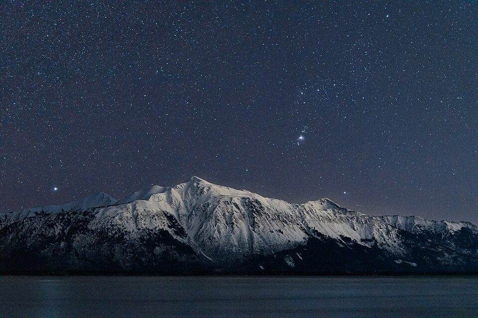
121 Orion Setting Over Snowy Mountain
눈 덮인 산 위 오리온자리. 위쪽 하늘이 고르게 어둡습니다. 아래쪽 4분의 1은 밝은 눈입니다.
크레딧 표기 필요 Eric Kilby, CC BY-SA 2.0, via Wikimedia Commons
동일조건 라이선스입니다. 잘라 쓰거나 어둡게 바꾼 본을 배포할 때 같은 조건이 적용됩니다.
추천 10장, 별빛·오로라 정지 이미지 7장, 전체 후보 127장, 국내외 사례 93곳입니다. 모든 썸네일은 벽 비율(2.19:1)로 가운데를 잘라 보여 줍니다. 위아래가 잘리는 모습을 그대로 보시면 됩니다.
추천 방향은 부드러운 하늘과 구름, 낮은 대비의 풍경을 어둡게 낮춰 쓰는 것입니다. 가사와 자막을 올리기 쉽고, 가운데가 가려져도 영향이 적은 편입니다. 실제 벽에서 시험이 필요합니다. 다만 사례를 보면 교회는 미리 만든 영상, 가사, 제목, 카메라 화면을 주로 띄우고, 하늘과 풍경을 띄우는 곳은 소수입니다.
별빛이나 오로라 산을 배경으로 쓸 때의 후보입니다. 움직이지 않으니 움직임으로 인한 어지러움과 반복 재생의 끊김은 없습니다. 별이 빽빽한 화면 자체가 이 크기에서 어떻게 보일지는 시험하지 못했습니다. 별이 많으면 글자 뒤가 복잡해지므로, 하단 가사나 자막을 올릴 때는 어둡게 낮춰 시험하세요. 크레딧 없이 쓰시려면 127번(복잡한 편)이나 전체 후보의 104번, 107번을 보세요.

눈 덮인 산 위 오리온자리. 위쪽 하늘이 고르게 어둡습니다. 아래쪽 4분의 1은 밝은 눈입니다.
크레딧 표기 필요 Eric Kilby, CC BY-SA 2.0, via Wikimedia Commons
동일조건 라이선스입니다. 잘라 쓰거나 어둡게 바꾼 본을 배포할 때 같은 조건이 적용됩니다.
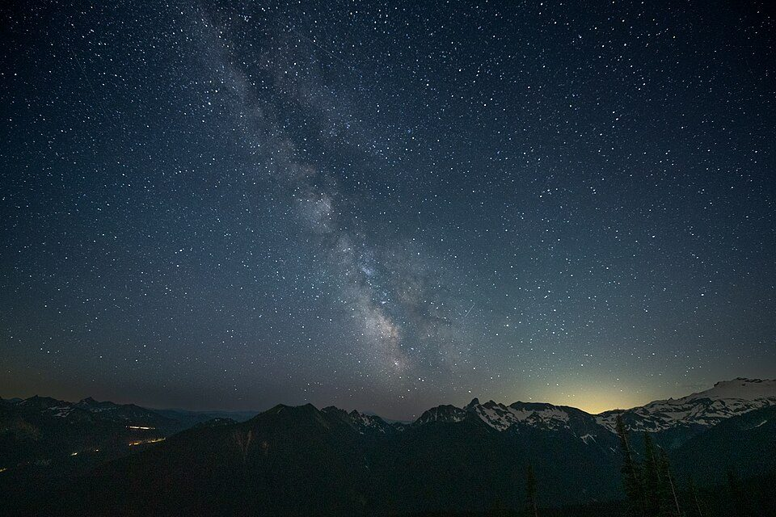
은하수가 은은하고 아래에 낮은 산줄기가 있습니다. 오른쪽 지평선에 빛 번짐이, 왼쪽 아래에 도로가 있습니다.
크레딧 표기 필요 Eric Kilby, CC BY-SA 2.0, via Wikimedia Commons
동일조건 라이선스입니다. 잘라 쓰거나 어둡게 바꾼 본을 배포할 때 같은 조건이 적용됩니다.
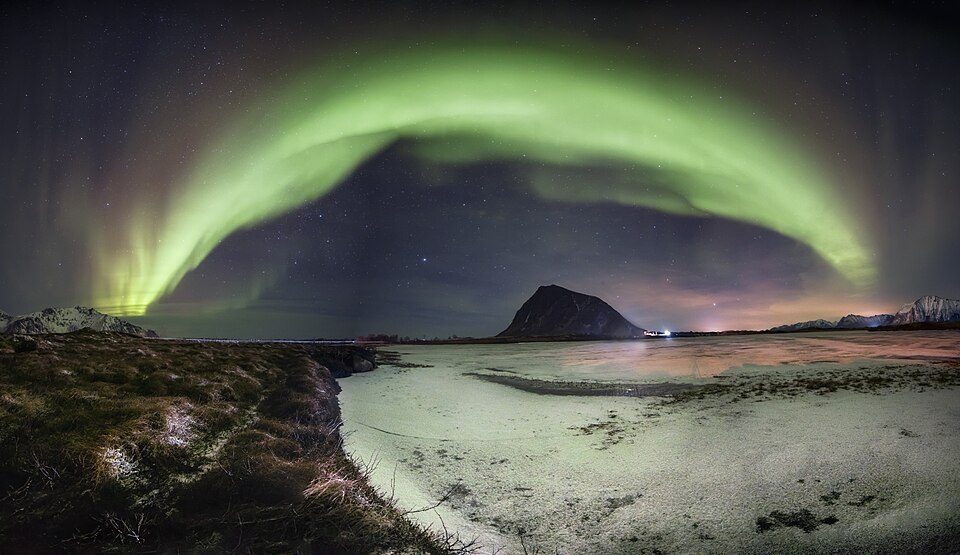
오로라와 산. 초록빛이 강하고, 아래쪽 절반은 옅은 얼음 해안이며 가운데 해안선에 밝은 불빛이 있습니다. 더 위쪽으로 자르거나 많이 어둡게 하세요.
크레딧 표기 필요 Anthony's astro, CC BY 4.0, via Wikimedia Commons
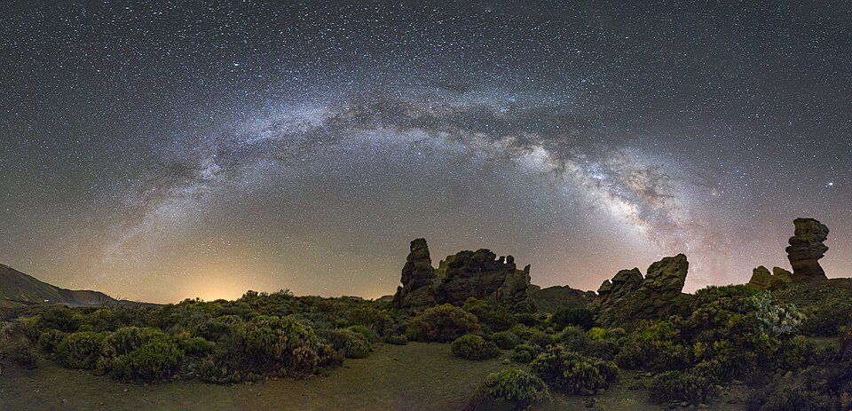
은하수 아치가 가운데로 지나가 강단에 가려도 양옆 곡선이 남습니다. 아래 3분의 1은 덤불과 바위로 복잡해, 글자는 위쪽에만 두세요.
크레딧 표기 필요 AstroAnthony, CC BY 4.0, via Wikimedia Commons
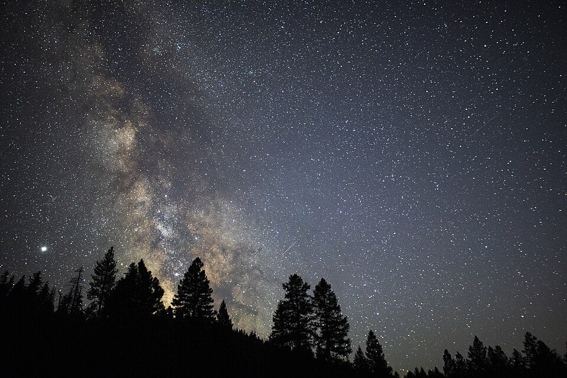
은하수와 아래 나무 실루엣. 나무가 벽 하단을 차분하게 잡아 줍니다.
크레딧 표기 필요 BLM Oregon & Washington, CC BY 2.0, via Wikimedia Commons
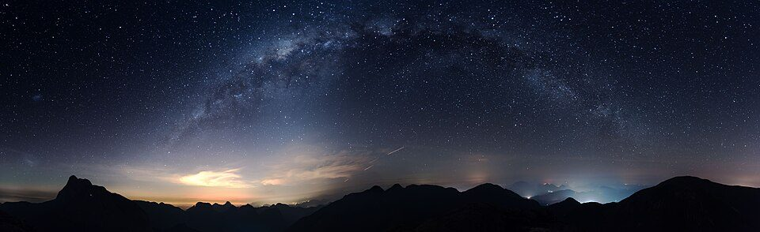
은하수 아치. 벽 비율로 자르면 폭의 약 3분의 1이 잘립니다. 왼쪽에 밝은 빛 번짐, 오른쪽에 불빛이 있습니다. 픽셀 수에 비해 파일이 7MB로 작아 압축이 심할 수 있으니 100%로 먼저 확인하세요.
크레딧 표기 필요 Alexandre Xavier, CC BY 2.0, via Wikimedia Commons
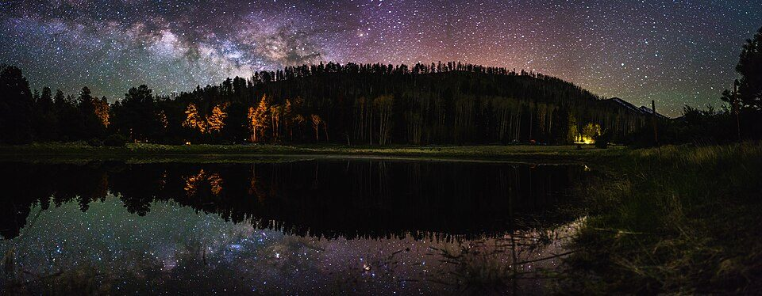
크레딧이 필요 없는 별 사진. 다만 복잡합니다. 나무에 불빛이 있고 가운데 오른쪽에 불 켜진 시설이 있으며, 별은 위쪽 띠와 호수 반사에만 보입니다.
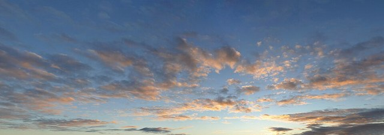
구름만 가로로 펼쳐져 강단이 가운데를 가려도 영향이 적은 편입니다. 세로 여유가 거의 없어 위아래로 옮기기 어렵습니다. 크레딧 불필요.
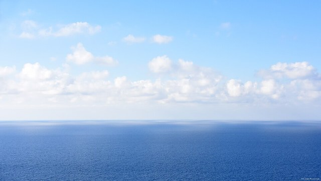
수평선이 잔잔합니다. 밝은 편이라 많이 어둡게 해서 쓰세요. 서명은 잘리는 영역에 있습니다.
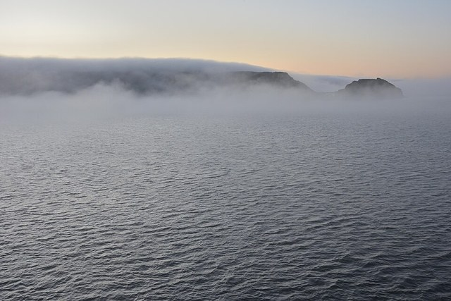
대비가 낮은 바다 이미지로 가사 배경에 알맞은 편입니다. 오른쪽 위에 육지가 있습니다.
크레딧 표기 필요 Stephane Lesbats, CC BY 4.0, via Wikimedia Commons
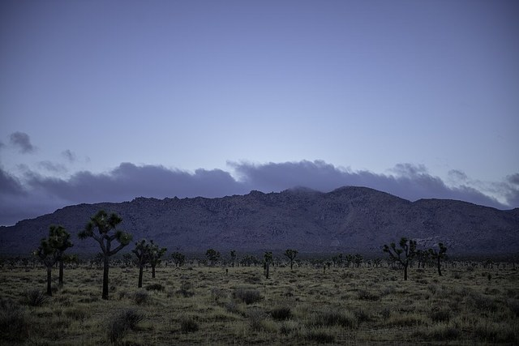
푸르스름한 하늘이 위쪽 절반을 차지해 글자를 올리기 쉬운 편입니다. 아래쪽은 벽 전체 폭의 산줄기와 구름 띠이고, 왼쪽의 조슈아나무는 벽 높이의 3분의 1쯤으로 큽니다. 크레딧 불필요.
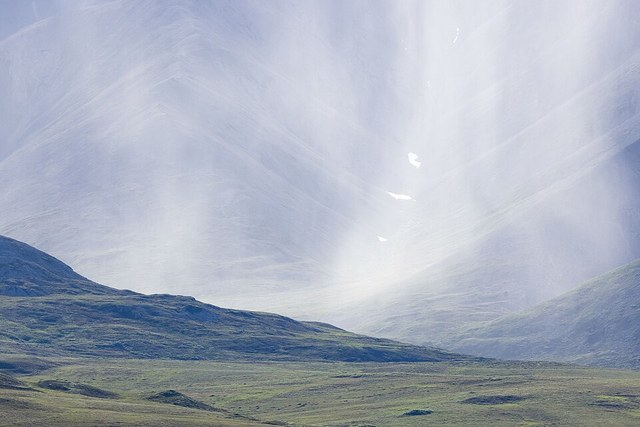
대부분 옅은 흐린 하늘입니다. 가운데 흰 틈과 아래 어두운 언덕이 있어 어둡게 해서 쓰세요.
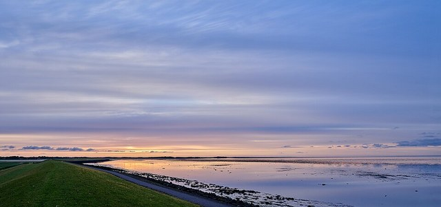
연보라 구름층이 가로로 고르게 펼쳐집니다. 왼쪽 아래에 풀밭과 길이 있습니다.
크레딧 표기 필요 Denkrahm, CC BY 4.0, via Wikimedia Commons
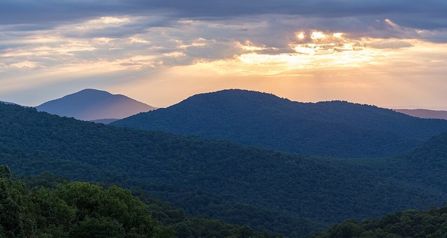
겹겹의 푸른 능선이 가로로 이어집니다. 대비가 높은 편이고 가운데 위쪽에 해가 듭니다.
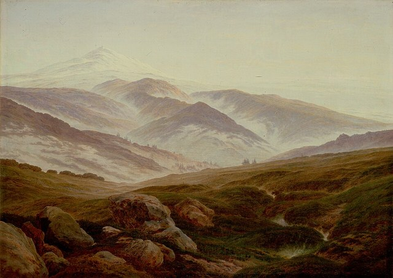
안개 낀 구릉이 이어지고 중앙에 큰 대상이 없습니다.
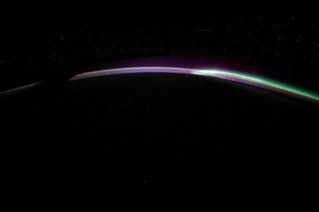
거의 검은 화면에 오로라 곡선이 위쪽 오른편에 있습니다. 왼쪽에 어두운 물체가 곡선을 끊습니다. 파일이 3MB로 작아 100%로 먼저 확인하세요. 크레딧 불필요.
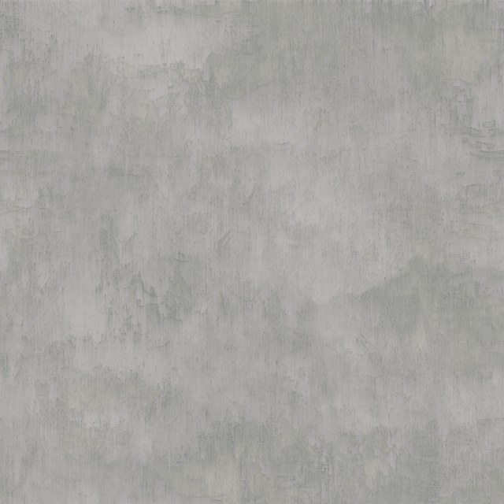
모두 벽 비율로 잘라도 7,912 × 3,612 이상이라 확대할 필요가 없습니다. 크레딧 없이 쓸 수 있는 이미지가 76장, 표기가 필요한 이미지가 51장입니다. '원본 받기'를 누르면 새 탭에 열리며, 파일이 큰 것은 시간이 걸립니다. 위키미디어 72개는 공식 API로 존재와 주소만 확인했고, 나머지 55개(위키미디어 32개 포함)는 앞부분을 실제로 받아 확인했습니다. 용량이 큰 TIFF와 PSB는 변환이 필요할 수 있으니 JPEG나 PNG부터 시작하는 편이 쉽습니다.
수평선이 잔잔합니다. 밝은 편이라 많이 어둡게 해서 쓰세요. 서명은 잘리는 영역에 있습니다.
구름만 가로로 펼쳐져 강단이 가운데를 가려도 영향이 적은 편입니다. 세로 여유가 거의 없어 위아래로 옮기기 어렵습니다.
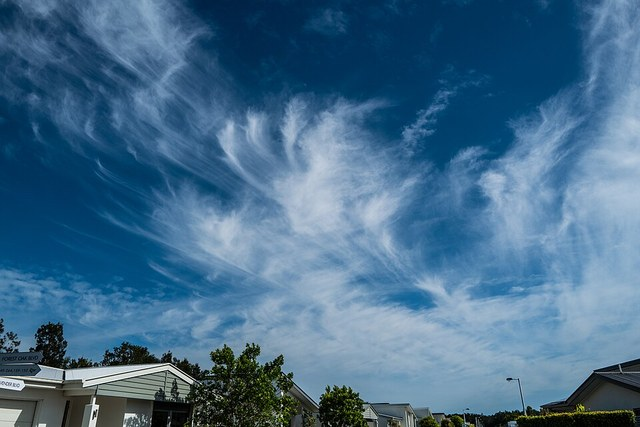
깃털 같은 권운이 넓게 퍼짐. 크롭 바로 아래 지붕이 있어 아래로 옮기지 말 것
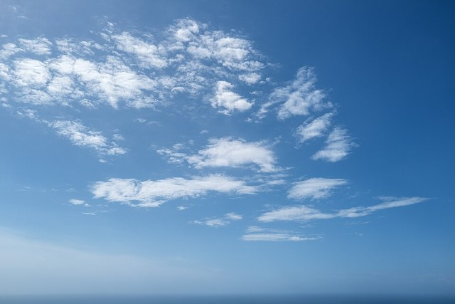
푸른 하늘에 흩어진 구름이 부드러움. 맑은 낮 하늘이라 약간 디밍 필요
크레딧 표기 필요 Giorgio Galeotti, CC BY 2.0, via Wikimedia Commons
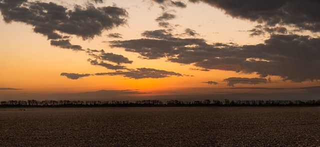
주황 하늘과 어두운 대지. 지평선이 곧게 이어짐, 색이 다소 강함
크레딧 표기 필요 Corey Leopold, CC BY 2.0, via Wikimedia Commons
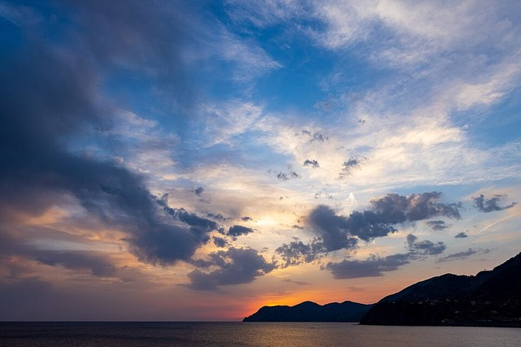
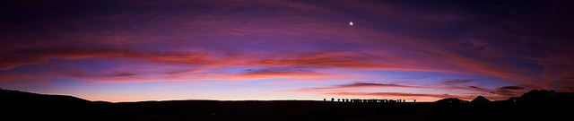
보랏빛 노을 구름 띠. 가로로 넓고 어두워 차분함
크레딧 표기 필요 ESO/B. Tafreshi ( twanight.org ), CC BY 4.0, via Wikimedia Commons
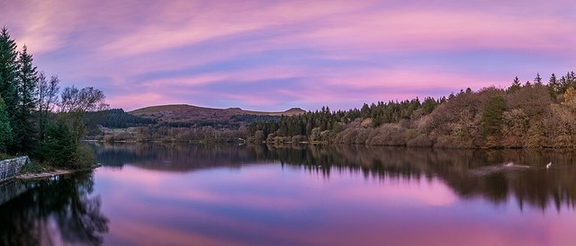
분홍빛 노을과 호수 반사. 채도가 높아 디밍 필요
크레딧 표기 필요 Adam Court, CC BY 2.0, via Wikimedia Commons
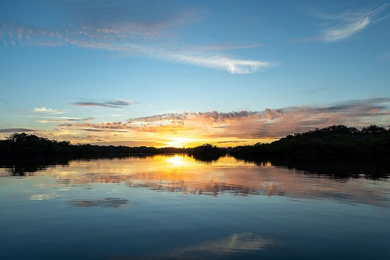
수평선의 해와 물 반사가 고요함. 해가 중앙이라 강단에 일부 가려짐
크레딧 표기 필요 flowcomm, CC BY 4.0, via Wikimedia Commons
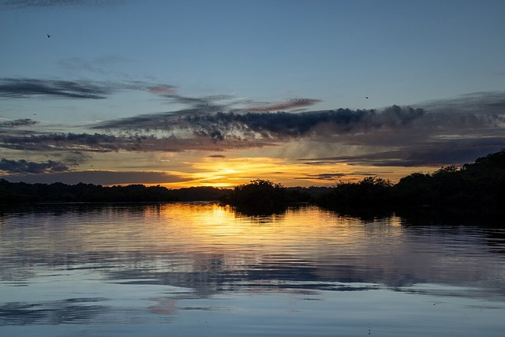
어두운 물과 낮은 금빛 띠. 저녁 예배에 어울리는 차분한 톤
크레딧 표기 필요 flowcomm, CC BY 4.0, via Wikimedia Commons
겹겹의 푸른 능선이 가로로 이어집니다. 대비가 높은 편이고 가운데 위쪽에 해가 듭니다.
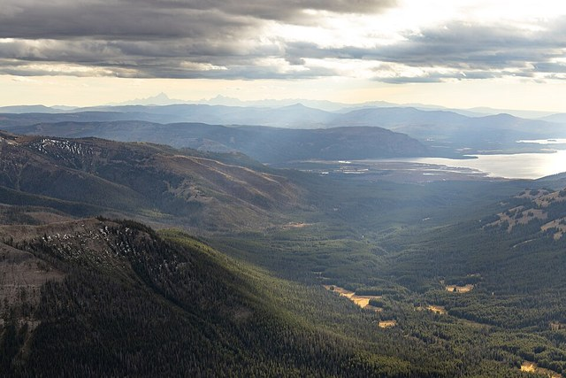
넓은 계곡과 밝은 하늘 띠. 윗부분이 밝으니 디밍 필요
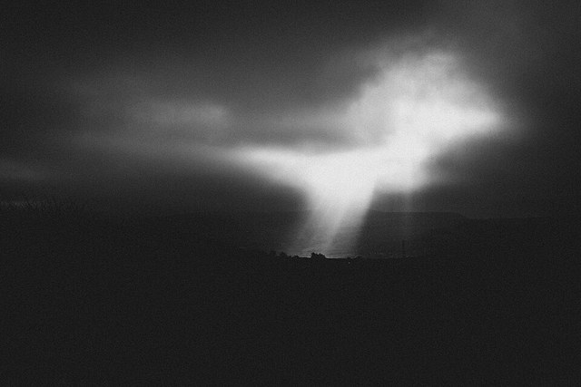
흑백의 어두운 하늘과 중앙의 빛. 초점이 부드러워 원본 선명도 확인 필요
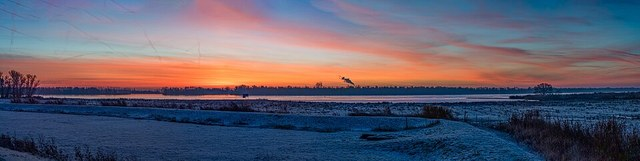
주황 노을과 낮은 물가. 색이 강한 편이라 디밍 필요, 하늘의 새 확인
크레딧 표기 필요 Paul van de Velde, CC BY 2.0, via Wikimedia Commons
연보라 구름층이 가로로 고르게 펼쳐집니다. 왼쪽 아래에 풀밭과 길이 있습니다.
크레딧 표기 필요 Denkrahm, CC BY 4.0, via Wikimedia Commons
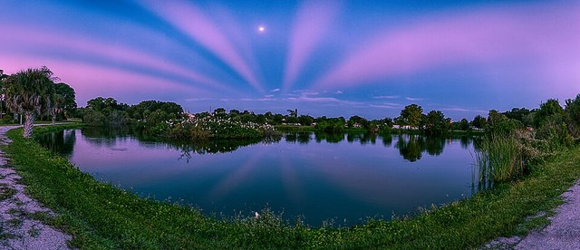
분홍 빛살이 하늘 가득 퍼짐. 채도가 강해 특별한 때에 사용
크레딧 표기 필요 Don Miller, CC BY 2.0, via Wikimedia Commons
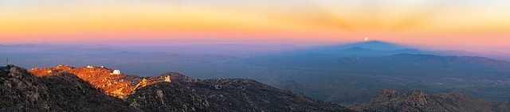
주황 하늘과 흐린 푸른 능선. 대비가 낮아 차분함
크레딧 표기 필요 KPNO/NOIRLab/NSF/AURA/P. Horálek (Institute of Physics in Opava), CC BY 4.0, via Wikimedia Commons
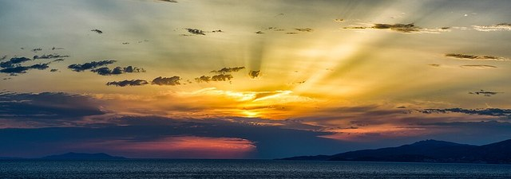
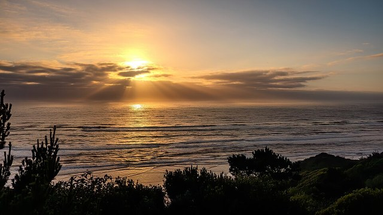
금빛 바다와 낮은 해. 해가 중앙이라 강단 뒤로 비침, 아래 수풀 확인
크레딧 표기 필요 Casey Helton, CC BY 4.0, via Wikimedia Commons
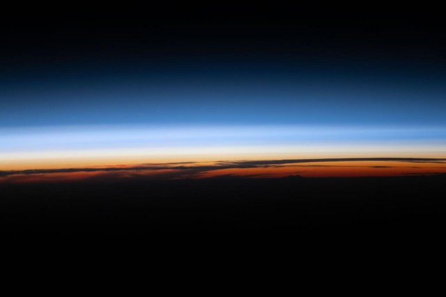
검은 화면에 청색과 주황의 가로 띠. 절제되어 얼굴을 압도하지 않음
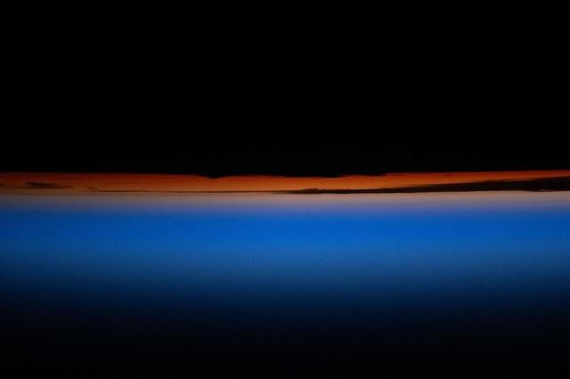
가는 붉은 선과 짙은 파랑. 어두운 가로 띠 구도
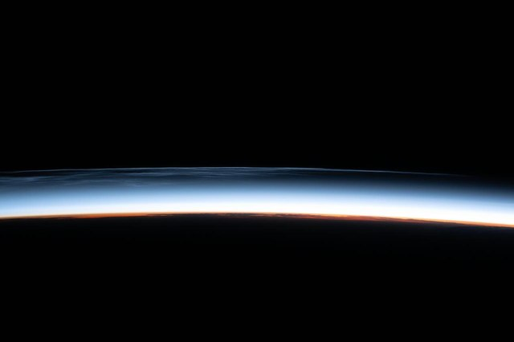
검은 화면에 빛나는 지평선 한 줄. 흰 선이 밝아 디밍 필요
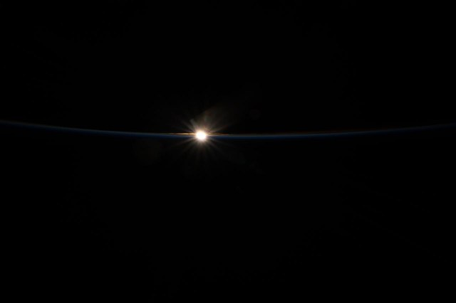
거의 검은 화면에 작은 빛 한 점. 가장 어두운 후보로 가사에 유리
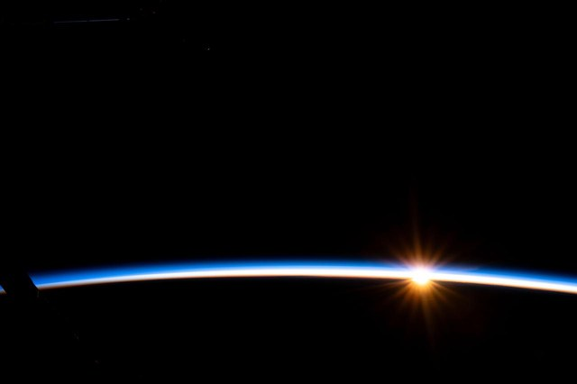
검은 바탕에 얇은 곡선과 해. 빛 지점이 작아 강단을 피해 배치 가능
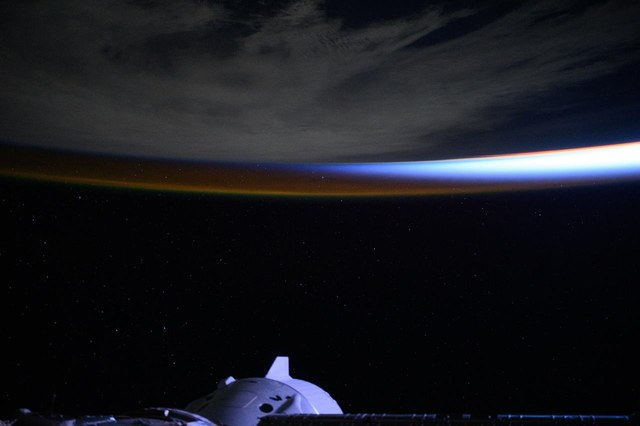
회색 구름 아래 얇은 빛줄기. 크롭 아래쪽 우주선이 걸리지 않게 위치 유지
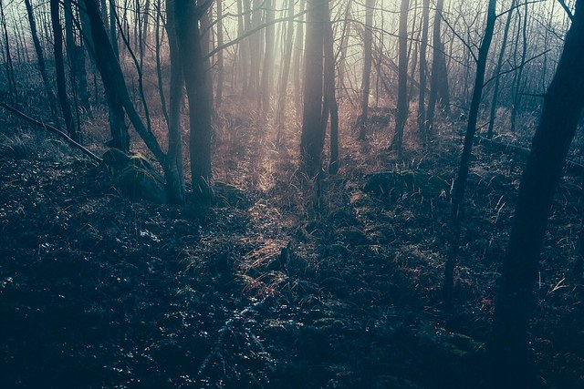
어두운 숲 사이로 빛 안개가 드는 장면. 분위기는 좋으나 나무줄기가 강함
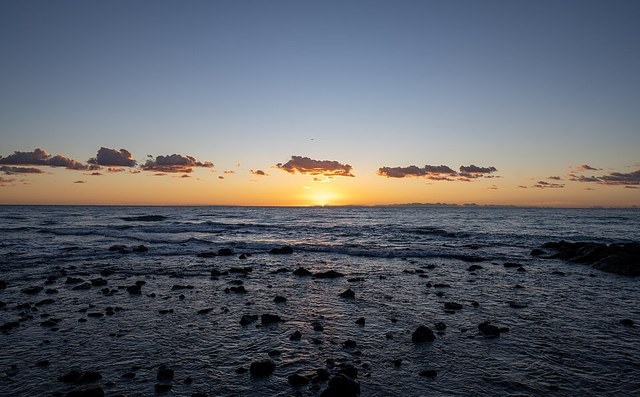
수평선 노을과 어두운 바다가 가로로 이어짐. 제목대로 하늘의 작은 비행기 확인
크레딧 표기 필요 TivoliTibutino, CC BY 4.0, via Wikimedia Commons
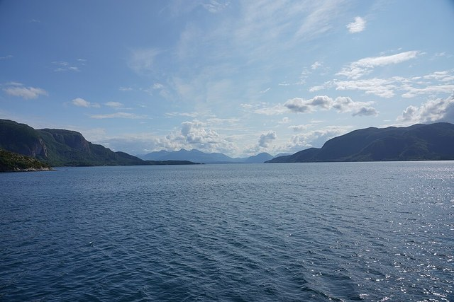
양쪽 산 사이로 바다가 트여 중앙이 비어 있음. 차분한 청색 톤
크레딧 표기 필요 Lukas Beck, CC BY 4.0, via Wikimedia Commons
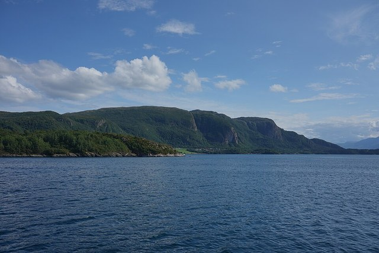
긴 산줄기와 잔잔한 바다. 가로 구도라 강단 뒤에 적합
크레딧 표기 필요 Lukas Beck, CC BY 4.0, via Wikimedia Commons
대비가 낮은 바다 이미지로 가사 배경에 알맞은 편입니다. 오른쪽 위에 육지가 있습니다.
크레딧 표기 필요 Stephane Lesbats, CC BY 4.0, via Wikimedia Commons
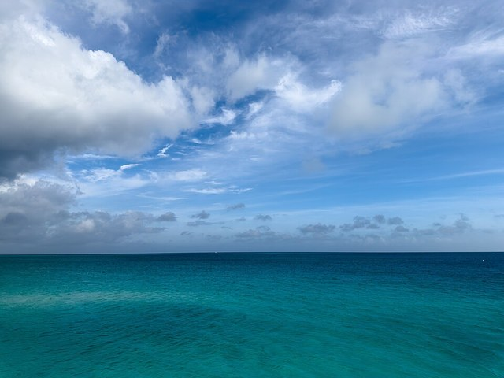
넓은 구름과 청록색 바다. 대비가 있어 약간 디밍 필요
크레딧 표기 필요 Caicos Rentals ( https://caicosrentals.com ), CC BY 4.0, via Wikimedia Commons
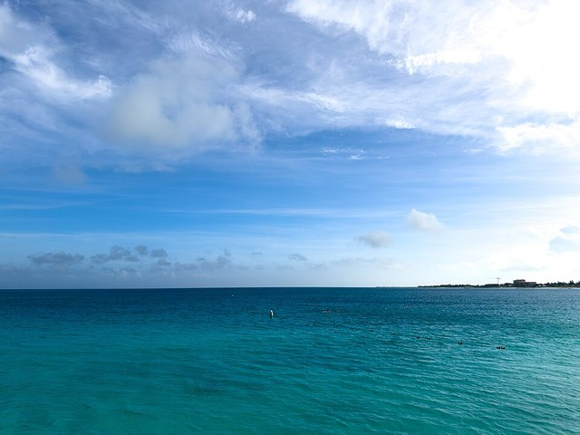
맑은 하늘과 얇은 청록 수평선. 중앙이 비어 가사 얹기 좋음, 밝아서 디밍 필요
크레딧 표기 필요 Caicos Rentals ( https://caicosrentals.com ), CC BY 4.0, via Wikimedia Commons
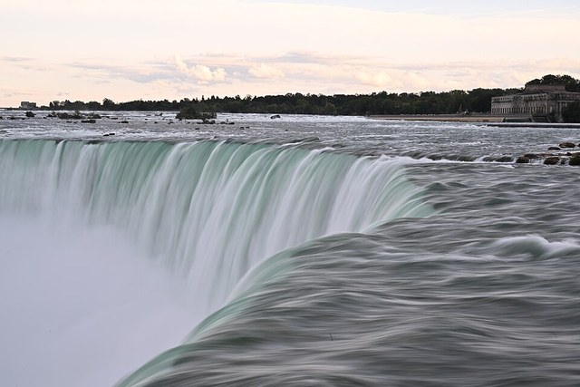
긴 노출로 부드러워진 물결. 힘 있는 찬양에 어울리나 움직임 인상이 큼, 오른쪽 위 건물 확인
크레딧 표기 필요 G. Edward Johnson, CC BY 4.0, via Wikimedia Commons
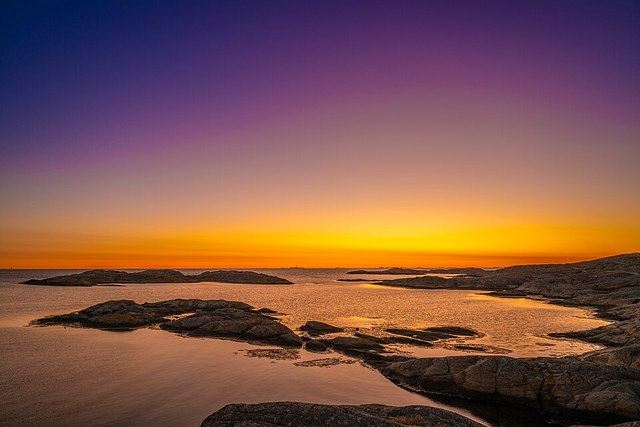
노을과 잔잔한 물, 낮은 바위. 보랏빛이 강해 약간 디밍 필요
크레딧 표기 필요 Karlheinz Klingbeil from Germany, CC BY 4.0, via Wikimedia Commons
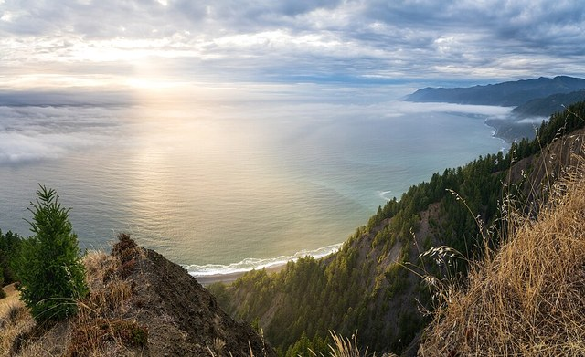
해 비친 바다와 양쪽 산자락. 중앙이 밝고 비어 있음, 디밍 필요
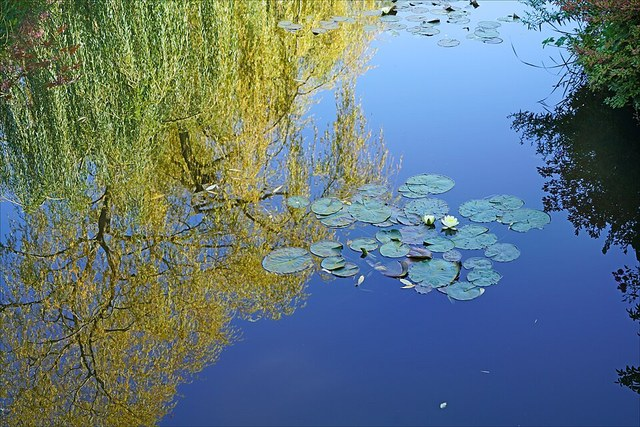
푸른 하늘이 비친 연못. 왼쪽 버드나무 세부가 많아 카메라 시험 필요
크레딧 표기 필요 Jean-Pierre Dalbéra from Paris, France, CC BY 2.0, via Wikimedia Commons
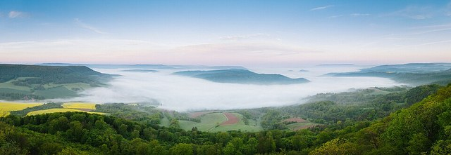
안개 낀 계곡이 가로로 펼쳐져 평온함. 아래 숲과 밭 색은 낮춰 사용
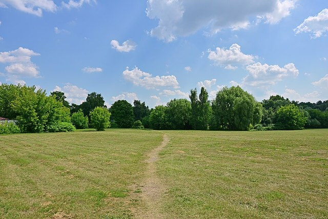
초원과 나무, 넓은 하늘. 밝은 낮 풍경이라 디밍 필요, 아래 오솔길 확인
크레딧 표기 필요 Юрий Д.К., CC BY 4.0, via Wikimedia Commons
산과 호수 반사가 가로로 펼쳐져 평온함. 크롭으로 양쪽 나무가 잘림
크레딧 표기 필요 Kylir Horton from Eagle Mountain, Utah, United States, CC BY 2.0, via Wikimedia Commons
좌우 산과 청록 호수의 대칭 구도. 대비가 있어 디밍 필요
크레딧 표기 필요 TerryDOtt, CC BY 2.0, via Wikimedia Commons
어두운 계곡과 분홍 하늘. 저녁 예배에 적합
크레딧 표기 필요 Trougnouf (Benoit Brummer), CC BY 4.0, via Wikimedia Commons
청색 산비탈과 구름. 차가운 톤으로 차분함, 오른쪽 아래 진한 파랑은 낮춰 사용
대부분 옅은 흐린 하늘입니다. 가운데 흰 틈과 아래 어두운 언덕이 있어 어둡게 해서 쓰세요.
은은한 비안개 산비탈. 화면이 고르게 밝아 디밍 필요
푸르스름한 하늘이 위쪽 절반을 차지해 글자를 올리기 쉬운 편입니다. 아래쪽은 벽 전체 폭의 산줄기와 구름 띠이고, 왼쪽의 조슈아나무는 벽 높이의 3분의 1쯤으로 큽니다.
눈이 남은 고산 분지. 세부가 많아 카메라 시험 필요
먼 설산과 들판의 층이 펼쳐짐. 아래 밭고랑 선은 카메라 시험 필요
크레딧 표기 필요 Qvidemus, CC BY 3.0, via Wikimedia Commons
안개 위로 솟은 봉우리. 오른쪽 단풍 경사의 도로 난간 확인
크레딧 표기 필요 TerryDOtt, CC BY 2.0, via Wikimedia Commons
눈 덮인 완만한 언덕. 밝아서 강한 디밍 필요, 눈 위의 작은 점 확인
크레딧 표기 필요 Raita Futo from Tokyo, Japan, CC BY 2.0, via Wikimedia Commons
회청색 산과 전나무 띠. 가로로 안정적이나 나무 끝이 뾰족해 시험 필요
크레딧 표기 필요 Thomas Quine, CC BY 2.0, via Wikimedia Commons
흐린 하늘과 고른 초록 들판, 지평선이 곧고 차분함. 녹색은 약간 낮춰 사용
크레딧 표기 필요 মোঃ সাকিবুল হাসান, CC BY 4.0, via Wikimedia Commons
호수와 산줄기가 폭 전체에 퍼짐. 낮 풍경이라 밝기를 낮춰 사용
크레딧 표기 필요 Tournasol7, CC BY 4.0, via Wikimedia Commons
붉은 사막 구릉이 부드럽게 겹침. 오른쪽 천문대가 크롭 바로 밖이니 위치 유지
크레딧 표기 필요 ESO/B. Tafreshi ( twanight.org ), CC BY 4.0, via Wikimedia Commons
은하수 곡선과 낮은 지평선. 작은 천문대 돔이 보이며 일부는 강단에 가려짐
크레딧 표기 필요 International Gemini Observatory/NOIRLab/NSF/AURA/P. Horálek (Institute of Physics in Opava), CC BY 4.0, via Wikimedia Commons
짙은 청색 위 흰 구름 성운. 푸른 톤이 차분함, 오른쪽 아래 밝은 별 확인
크레딧 표기 필요 Ram samudrala, CC BY 4.0, via Wikimedia Commons
톤이 눌린 성운. 잔별이 많아 카메라 시험 필요
대부분 검은 배경이라 얼굴을 압도하지 않음. 중앙 은하는 강단에 가려질 수 있음
붉은 안개 성운. 붉은색은 피부톤에 영향 가능, 디밍 필요
별과 지평선 대기광. 가로 띠 구도라 강단에 적합, 도시 불빛은 크롭 아래
주황 대기광이 가로로 퍼진 하늘. 띠가 강해 디밍 필요, 도시 불빛은 크롭 아래
별과 녹색 대기광. 아래 흰 구름이 크롭 끝에 걸리니 위치 확인
거의 검은 화면에 오로라 곡선. 왼쪽에 어두운 물체가 곡선을 끊습니다. 파일이 3MB로 작아 100%로 먼저 확인하세요.
아주 어두운 보라빛 곡선. 오른쪽 희미한 구조물 그림자 확인
어둡지 않은 중간 톤의 복잡한 성운. 가사 없이 가끔 사용
크레딧 표기 필요 NASA , ESA , N. Smith (University of California, Berkeley), and The Hubble Heritage Team (STScI/AURA)
은은한 은하 두 개가 좌우에 놓여 중앙이 비는 편. 어두운 배경
크레딧 표기 필요 NASA, ESA, J. Mack, and J. Madrid et al.
안드로메다 일부로 대비가 낮고 차분한 갈색 톤. 원본은 PSB 형식이라 변환 필요
크레딧 표기 필요 NASA , ESA , J. Dalcanton (University of Washington, USA), B. F. Williams (University of Washington, USA), L. C. Johnson (University of Washington, USA), the PHAT team, and R. Gendler.
PSB 파일이라 포토샵에서 변환해야 합니다.
가로로 이어지는 성운 능선과 짙푸른 위쪽. 채도가 높아 디밍 필요
크레딧 표기 필요 NASA, ESA, CSA, and STScI, J. DePasquale (STScI)
부드러운 푸른 구름. 왼쪽 아래 별빛 십자 외 차분함
크레딧 표기 필요 NASA, ESA, CSA, and M. Zamani (ESA/Webb); Science: F. Sun (Steward Observatory), Z. Smith (Open University), and the Ice Age ERS Team.
중앙이 어두워 강단 뒤에 유리. 주변 필라멘트는 다소 복잡
크레딧 표기 필요 NASA, ESA, CSA, and STScI
어둡고 푸른 반사 성운. 중앙 대상이 강단에 일부 가려짐
크레딧 표기 필요 ESO/Igor Chekalin
넓고 은은한 오리온 성운. 어두운 배경으로 차분함
크레딧 표기 필요 ESO/G. Beccari
어두운 바탕에 푸른 빛 둘. 절제된 분위기, 잔별은 카메라 시험 필요
크레딧 표기 필요 ESO
은하수 띠가 낮은 대비로 가로로 흐름. 우주 계열 중 가장 차분함, 원본은 PSB 형식
크레딧 표기 필요 ESO/VVV Survey/D. Minniti Acknowledgement: Ignacio Toledo, Martin Kornmesser
PSB 파일이라 포토샵에서 변환해야 합니다.
잘 알려진 성운 절벽. 채도와 별빛 십자가 강해 가끔 사용
크레딧 표기 필요 NASA, ESA, CSA, and STScI
어두운 능선 위 은하수. 지평선이 낮아 강단에 적합, 잔별은 카메라 시험 필요
크레딧 표기 필요 ESO/ P. Horálek, CC BY 4.0, via Wikimedia Commons
눈 덮인 산 위 오리온자리. 위쪽 하늘이 고르게 어둡습니다. 아래쪽 4분의 1은 밝은 눈입니다.
크레딧 표기 필요 Eric Kilby, CC BY-SA 2.0, via Wikimedia Commons
동일조건 라이선스입니다. 잘라 쓰거나 어둡게 바꾼 본을 배포할 때 같은 조건이 적용됩니다.
은하수가 은은하고 아래에 낮은 산줄기가 있습니다. 오른쪽 지평선에 빛 번짐이, 왼쪽 아래에 도로가 있습니다.
크레딧 표기 필요 Eric Kilby, CC BY-SA 2.0, via Wikimedia Commons
동일조건 라이선스입니다. 잘라 쓰거나 어둡게 바꾼 본을 배포할 때 같은 조건이 적용됩니다.
오로라와 산. 초록빛이 강하고, 아래쪽 절반은 옅은 얼음 해안이며 가운데 해안선에 밝은 불빛이 있습니다. 더 위쪽으로 자르거나 많이 어둡게 하세요.
크레딧 표기 필요 Anthony's astro, CC BY 4.0, via Wikimedia Commons
은하수 아치가 가운데로 지나가 강단에 가려도 양옆 곡선이 남습니다. 아래 3분의 1은 덤불과 바위로 복잡해, 글자는 위쪽에만 두세요.
크레딧 표기 필요 AstroAnthony, CC BY 4.0, via Wikimedia Commons
은하수와 아래 나무 실루엣. 나무가 벽 하단을 차분하게 잡아 줍니다.
크레딧 표기 필요 BLM Oregon & Washington, CC BY 2.0, via Wikimedia Commons
은하수 아치. 벽 비율로 자르면 폭의 약 3분의 1이 잘립니다. 왼쪽에 밝은 빛 번짐, 오른쪽에 불빛이 있습니다. 픽셀 수에 비해 파일이 7MB로 작아 압축이 심할 수 있으니 100%로 먼저 확인하세요.
크레딧 표기 필요 Alexandre Xavier, CC BY 2.0, via Wikimedia Commons
크레딧이 필요 없는 별 사진. 다만 복잡합니다. 나무에 불빛이 있고 가운데 오른쪽에 불 켜진 시설이 있으며, 별은 위쪽 띠와 호수 반사에만 보입니다.
짙은 갈색 모래 질감. 고른 톤이라 가사 배경으로 쓰기 좋음
붉은 갈색 하늘과 어두운 바다. 거친 붓질이 있어 카메라 시험 필요
하늘과 넓은 계곡이 가로로 펼쳐진 유화. 아래 인물은 크롭 밖
안개 낀 구릉이 이어지고 중앙에 큰 대상이 없습니다.
옅은 서리 풍경으로 대비가 낮음. 밝아서 디밍 필요, 위쪽 어두운 띠는 크롭 밖
부드러운 청록 강변. 나무 덩어리가 중앙 오른쪽이라 강단 위치 확인
밝고 잔잔한 바다. 왼쪽 절벽 외 중앙이 비어 가사 얹기 좋음
웅장한 산길 풍경. 대비가 있어 창조 찬양 등에 가끔 사용 권장
넓은 하늘과 평원. 가운데 근처에 서 있는 사람 두 명이 작게 보이고 그 위로 산이 있습니다.
파란 산과 고목. 나무가 정중앙이라 강단에 가려질 수 있음
낮은 산줄기와 빈 들판, 대비가 아주 낮음. 오른쪽 아래 화가 서명이 크롭 안에 있음
금빛 호수와 산이 잔잔함. 왼쪽 아래 아주 작은 인물 확인
어두운 바탕에 붉은 구름. 저녁 예배·기도회에 어울림, 구름 일부는 강단에 가려짐
연못 반사가 은은함. 초점이 없어 강단 뒤에 적합
푸른 물과 수련이 화면 가득. 색이 다소 진해 디밍 필요
어둡고 고요한 늪 풍경. 은은한 반사가 있어 기도회에 어울림
화면에 무엇을 띄우는지 확인된 곳은 54곳이고, 39곳은 설치 사실만 확인했습니다. 국내는 29곳이며 그중 10곳만 내용이 확인됩니다. 국내 대형교회의 평소 배경과 무대 LED를 갖춘 국내 공연장 사례는 찾지 못했고, 영상은 볼 수 없어 예배 중계도 확인하지 못했습니다. 사례 사진은 재사용 허락이 없어 싣지 않고 링크만 드립니다.
| 미리 만든 영상·사진 | 18곳 |
| 실시간 카메라 | 16곳 |
| 가사 | 15곳 |
| 추상 그래픽·모션 배경 | 14곳 |
| 제목·환영 슬라이드·설교 시리즈 그래픽 | 14곳 |
| 이야기 속 장면 | 9곳 |
| 가상 건축·무대 배경 | 7곳 |
| 자연·풍경 | 6곳 |
| 하늘·구름·부드러운 빛 | 5곳 |
| 단색·색 입히기 | 5곳 |
| 성경 구절 | 4곳 |
| 뉴스 그래픽 | 3곳 |
내용이 확인된 54곳 기준이며, 한 곳이 여러 항목에 들어갑니다. 분류는 조사 중에 나눈 것이고, 사진은 한순간만 보여 줍니다.
가운데 십자가나 강단: 예광교회는 벽 중앙 앞에 십자가가 있어 글자가 일부 가려진다고 기사에 적혀 있습니다. 글자는 가운데를 피해 양옆이나 위쪽에 두는 것을 생각해 보세요. Empower Church는 가사를 벽 위쪽 띠에 두고, 송탄기쁜교회는 16:9 화면을 가운데에 놓고 양옆에 배너를 둡니다.
| 장소 | LED | 화면에 띄운 것 | 수준 | 출처 |
|---|---|---|---|---|
| 예광교회 (서울 관악구)대한민국 · 교회 | "대형 LED 스크린", 와이드 형식, 크기 미상. 정중앙 앞에 십자가가 걸려 있음. | 사진에서 확인: 예배순서 제목(봉헌기도)이 얹힌 부드러운 청백색 하늘 또는 빛 질감 화면, 그리고 제목이 있는 노을 하늘 파노라마 이미지(전경 사진). 캡션: "LED 앞에 있는 십자가. 글자가 일부 가려진다." | 확인 | 근거 |
| 잠실수동교회 (서울)대한민국 · 교회 | 6.72 x 3.36 m, P2.5, 본당 설치. 2025년 12월 완공. | 사진에서 확인: 화면 가득 옛 가족사진. 문구: "예배 영상과 다양한 콘텐츠". 그 사진이 나온 이유는 확인되지 않음. | 확인 | 근거 |
| 송산OO교회 (남양주, 출처에서 이름 가림)대한민국 · 교회 | P1.86, 700 nit, 크기 미상, 전면 벽에 매립. 2026년 3월 완공. | 사진 9장 중 2장을 확인: 붉게 빛나는 십자가와 예배 제목(...환영예배)이 있는 짙은 청색 그래픽, 설치 중 실내를 비춘 라이브 카메라 화면. | 확인 | 근거 |
| Yonsei Central Baptist church / 연세중앙침례교회 (서울)대한민국 · 교회 | ESD Lumens 312인치 3 mm LED 타일. 사진에서 확인: 벽 두 면이 중앙 십자가 양옆에 있고, 십자가 뒤에 있지는 않음. | 사진에서 확인: "Welcome to Yonsei Central Baptist Church" 문구가 있는 교회 건물 항공사진. 본문 글은 화면 내용을 설명하지 않음. | 확인 | 근거 |
| Seungbok Central church (서울, 출처 영문 표기)대한민국 · 교회 | "a large LED display"가 무대 중앙에 있음, 크기 미상. | 저해상도 사진에서 확인: 하단을 따라 흰 도형이 있는 보라색 바탕. 해상도가 낮아 세부는 판독 불가. 본문 글은 화면 내용을 설명하지 않음. | 확인 | 근거 |
| 송탄기쁜교회 소극장 Art Hall대한민국 · 교회 | 287인치, 21:9, 2.5 mm. | 본문: 21:9 영상은 자르지 않고 표시, 16:9 영상은 화면을 채우도록 잘라서 표시하거나 16:9를 중앙에 두고 양옆 여백에 배너를 넣음. ProPresenter로 송출. 확인한 사진 1장에는 LED 벽이 보이지 않음. | 확인 | 근거 |
| 대구오페라하우스, <Rigoletto> (2026년 4월)대한민국 · 공연 | "massive LED digital canvas"로 모든 장면에서 사용. 크기 미상. | 본문: 16세기 이탈리아 궁정의 3D 천장 프레스코, 장면마다 색과 질감이 바뀜. 사진에서 확인: 거대한 바로크풍 프레스코화, 아치와 글줄이 있는 낡은 회벽. | 확인 | 근거 |
| 서울 잠실종합운동장 주경기장, BTS PTD Seoul (2022)대한민국 · 공연 | 출처에 따르면 BTS 콘서트 중 최대 LED, 이동식 중앙 LED 포함. 치수 미상. | 본문: 이틀 밤의 앙코르 "HOME" 때 팬 이름 표시. 다른 출처는 곡마다 장면이 다르다고만 하고 설명은 없음. | 확인 | 근거 |
| 예술의전당 CJ토월극장, <신과 함께 - 저승편> (2015)대한민국 · 공연 | 뒷벽이 아님: 약 80 m2 LED 바닥, 그리고 3 mm LED 열차 창. | 본문: 역 이름, 패러디 간판(김밥지옥, 헬벅스), 패러디 검색 화면. | 확인 | 근거 |
| <드림걸즈>, 한미 합작 공연 (2009; 극장 이름 미공개)대한민국 · 공연 | 움직이는 LED 패널 5개, 각 약 2 x 6 m. | 본문: 각 장면에 맞춘 사전 촬영 영상. 구체적 내용은 설명되지 않음. | 확인 | 근거 |
| Tongyeong Juklim church (통영, 출처 영문 표기)대한민국 · 교회 | "A large LED screen was installed behind the pulpit", 크기 미상. | 설명 없음. 페이지에 캡션 없는 사진 8장이 있으나 확인하지 않음. | 설치만 | 근거 |
| 문래동 OO교회 (서울 영등포, 이름 가림)대한민국 · 교회 | 강대상 중앙 뒤 LED, 크기 미상. 예산은 2천만 원으로 명시됨. | 사진에서 확인: 보정 중의 컬러바만 보임. 화면 내용은 확인 안 됨. | 설치만 | 근거 |
| 성남제일교회대한민국 · 교회 | 크기와 피치 미상. | 설명 없음. 확인한 사진 1장은 설치 사실만 확인, 화면 내용은 확인 안 됨. 다른 2장은 확인하지 않음. | 설치만 | 근거 |
| 월계동 OO교회 대예배당 (이름 가림)대한민국 · 교회 | 3.84 x 2.4 m, 2.5 mm. | 목적만 명시: "예배시 여러가지 영상과 찬송가 및 여러가지 내용들을 띄우시기 위해". 실제 사용 장면은 확인 안 됨. | 설치만 | 근거 |
| 삼육대학교 홍명기홀 (국제교회 예배 장소)대한민국 · 예배 공간 | 5.12 x 2.88 m 스크린 3면, 합계 15.36 m, 2.5 mm. | 설명 없음. | 설치만 | 근거 |
| 신길교회대한민국 · 교회 | 2013년 재건축 후 본당의 "대형 LED 스크린". 크기 미상. | 설명 없음. | 설치만 | 근거 |
| 여의도순복음교회대한민국 · 교회 | 2014년 프로젝터에서 LED로 교체. 크기 미상. | 설명 없음. | 설치만 | 근거 |
| 용인 비전교회대한민국 · 교회 | 스크린을 LED로 교체. 크기 미상. | 설명 없음. | 설치만 | 근거 |
| 여주교회대한민국 · 교회 | 스크린을 LED로 교체. 크기 미상. | 설명 없음. | 설치만 | 근거 |
| 수정교회대한민국 · 교회 | 스크린을 LED로 교체. 크기 미상. | 설명 없음. | 설치만 | 근거 |
| 신촌교회대한민국 · 교회 | 업체(CDMB)가 50건 이상의 설치 사례 중 하나로 언급. 크기 미상. | 설명 없음. 업체 주장임. | 설치만 | 근거 |
| 명암교회대한민국 · 교회 | 영상 제목만 판독 가능. 검색 발췌문에는 P2.5, 147인치로 나왔으나 해당 페이지에서는 확인되지 않음. | 설명 없음. 영상을 보지 못함. | 설치만 | 근거 |
| 안양중앙교회대한민국 · 교회 | 업체 배너 캡션: "LED 디스플레이 5k". 크기 미상. | 설명 없음. | 설치만 | 근거 |
| 국내 교회 (QSTECH, 이름 미공개)대한민국 · 교회 | 실내용 3.9 mm, 크기 미상. | 목적만 명시: 성경 구절, 예식 장면, 활동 안내. 실제 사용 장면은 확인 안 됨. | 설치만 | 근거 |
| MBC 뉴스데스크 스튜디오대한민국 · 방송 | 24 m L자형 LED, 곡면 LED, 움직이는 수직 LED, 2023년 6월. | XR 그래픽은 설명되어 있으나 LED가 구체적으로 무엇을 보여 주는지는 없음. 캡션 없는 사진 3장. | 설치만 | 근거 |
| KBS XR/VP 스튜디오대한민국 · 방송 | 10 x 4.5 m, ROE BP2V2. | "immersive and dynamic sets"라는 언급뿐. 구체적 내용 없음. | 설치만 | 근거 |
| 광화문광장, BTS comeback (2026년 3월)대한민국 · 공연 | 경복궁을 감싼 아치형 대형 LED, 아치 안쪽에도 LED. 크기 미상. | 설명 없음. 출처에 따르면 제작진이 콘텐츠를 비밀에 부쳤음. | 설치만 | 근거 |
| <데스노트> (극장 이름 미공개)대한민국 · 공연 | 무대 앞면 전체가 LED. 크기 미상. | 구체적 화면 없음. 디자이너는 LED를 배경이 아닌 조명으로 다룸. | 설치만 | 근거 |
| Lee Juck 'RESONATE' and Shinhwa 'Hero' concerts (공연장 이름 미공개)대한민국 · 공연 | 움직이는 트러스에 LED 스크린. 크기 미상. | 설명 없음. | 설치만 | 근거 |
| Citipointe Church (Brisbane)호주 · 교회 | 12 x 4 m, 3.9 mm, 메인 배경, 1000 nit의 약 35%로 운용. | 본문: 가사, 성경 구절, 광고, 영상 이미지. | 확인 | 근거 |
| Action Church (Winter Park, Florida)미국 · 교회 | Absen Polaris 3.9 mm, 중앙 벽과 기둥, 1,000석. | 사진에서 확인: 중앙 벽에는 청색 바탕의 가사 한 줄, 측면 스크린에는 라이브 카메라. | 확인 | 근거 |
| Empower Church (Pretoria)남아프리카공화국 · 교회 | Absen KL2.5, 크기 미상, 설교 배경. | 본문: "creative content, motion backgrounds, updated themes and videos", 예배 중 백라이트와 색 워시. 사진에서 확인: 상단에 가사 띠가 있는 녹색-보라색 대리석무늬 추상 화면. | 확인 | 근거 |
| Maranatha church (Kempton Park)남아프리카공화국 · 교회 | Absen PL2.9 lite: 예배당 찬양 보드, 그리고 곡면 로비 스크린. | 본문: 예배당은 예배 가사를 표시. 로비는 뮤직비디오, 환영 루프, 교회 사진, 창의적 이미지. | 확인 | 근거 |
| Rivers Church (Sandton)남아프리카공화국 · 교회 | 메인 Utile4.8 81.25 m2, 측면 Ufix6 스크린 2개 합계 112.8 m2. | 사진에서 확인: 하단에 가사가 있는 밴드 라이브 카메라 화면. 본문은 "cool scene"이라고만 함. | 확인 | 근거 |
| Gospel Light Christian Church (출처에 국가 없음)국가 미상 · 교회 | 3개 예배당에 벽 7면. GOB P1.86(이 벽과 같은 피치)과 곡면 SMD P2.5. | 본문: 가사, 설교 프레젠테이션, 라이브 카메라, 영상, 그래픽 배경. 사진에서 확인: 청색 바탕의 교회 로고. | 확인 | 근거 |
| Community Bible Church (San Antonio)미국 · 교회 | ROE Topaz 2.6 패널 600개, 평면·곡면·큐브, "dynamic backdrop". | 사진에서 확인: 분리된 수직 패널 전체에 설교 시리즈 그래픽("All strings attached", 크림색 바탕에 붉은 실). | 확인 | 근거 |
| Shoreline City Church (Dallas)미국 · 교회 | 중앙 벽 CB3 90개, 무대 위 헤일로와 측면 스크린용 GP2.6 70개와 GP3.1 96개. | 사진에서 확인: 밴드 뒤에 하늘 같은 매끄러운 청색-흰색 그라데이션, 어두운 측면 스크린에 가사 단어, 헤일로는 단색 시안. | 확인 | 근거 |
| Grace Church (Chapel Hill, North Carolina)미국 · 교회 | Jet 2.6: 중앙 벽 80패널, 측면 스크린 30패널 2개. | 본문: 예배와 주중 라이브스트림의 실시간 카메라. 그 외 없음. | 확인 | 근거 |
| In His Presence Church (Woodland Hills, California)미국 · 교회 | Elation EZ6 패널 90개, 18 x 5, 중앙 배경. | 본문: "motion graphics, video and still photography", 곡마다 주제별 배경으로 메시지를 뒷받침. | 확인 | 근거 |
| Fairhaven Church (Centerville, Ohio)미국 · 교회 | 9.5 x 51 ft, 6 mm, 이어 붙이는 17 ft 구간 3개. | 본문: 사전 녹화 설교, 찬양 주제에 맞춘 자체 제작 영상, 실시간 카메라와 텍스트. | 확인 | 근거 |
| Life Church PDX (Aloha, Oregon)미국 · 교회 | Planar TVF, 거의 16 x 9 ft, 무대 바로 뒤. | 본문: "light, color and movement". 사진에서 확인: "WELCOME"가 있는 다채로운 기하학적 삼각형. | 확인 | 근거 |
| Oceans Church (Destin, Florida)미국 · 교회 | Planar MGP2.5, 거의 16 x 9 ft. | 목사 발언: 예배는 "in front of beautiful drone footage of a mountain range". 사진에서 확인: 밴드 뒤의 청백색 물 또는 거품 질감, 붉은 꽃 그래픽 위의 설교 제목과 성경 구절(설교자가 제목 앞부분을 가림). | 확인 | 근거 |
| Church of the Servant (Oklahoma City)미국 · 교회 | 사진에서 확인: Planar CarbonLight 벽 2면이 단상 양옆에 있음. | 사진에서 확인: 꽃이 핀 초록 초원과 "WELCOME". 본문 글은 화면 내용을 설명하지 않음. | 확인 | 근거 |
| Lake Providence Missionary Baptist Church (Nashville)미국 · 교회 | 4x4 2.5 mm 벽 2면, 강단 양옆. | 본문: "lyrics, scripture and live video feeds", 그래픽. | 확인 | 근거 |
| River Church (위치 미상)국가 미상 · 교회 | 13 x 8 ft 2.6 mm 벽 4면의 큐브, 360도 무대 위. 뒷벽이 아님. | 본문: 목사와 청중의 라이브 카메라, 선교 영상. | 확인 | 근거 |
| Calvary Christian Center (Yuba City, California)미국 · 교회 | 6 x 3 패널 ADJ 벽 2면, 무대 뒤 큰 십자가 양옆. | 본문: "song words, scripture readings and other visual content", 절기·시리즈 영상. | 확인 | 근거 |
| Impact Church (Scottsdale, Arizona)미국 · 교회 | ADJ VS3 144개, 3.91 mm, 무대 뒤 전폭. | 본문: 찬양 가사, 사전 제작 영상, 실시간 카메라, 찬양팀 실루엣용 단색. | 확인 | 근거 |
| Bellevue Baptist Church (Memphis)미국 · 교회 | 20 mm LED 커튼 패널 5개를 가수와 목사 뒤에 매닮. 일회성 행사. | 본문: 예수의 탄생·죽음·부활 이미지, 출연자 뒤의 색상. | 확인 | 근거 |
| Saddleback Church overflow tents (Lake Forest, California)미국 · 교회 | 9.84 x 16.4 ft와 6.56 x 11.48 ft, 3.9 mm. | 본문: 예배가 "nearly completely delivered via video". | 확인 | 근거 |
| Christ Place Church (Atlanta)미국 · 교회 | Unilumin UpadIII 80 ft 이상, 99.5 m2. | 본문: 예배 영상, "messages, news, and worship". | 확인 | 근거 |
| Lakewood Church (Houston)미국 · 교회 | 12 x 22 ft 이상 벽 2면, 4 mm, 단상 양쪽에 1면씩. | 본문: 실시간 카메라, 영감을 주는 이미지와 이야기, 라이브 설교 영상, 가사. | 확인 | 근거 |
| Crossroads Church, Oakley (Cincinnati)미국 · 교회 | 겹겹이 움직이는 ROE "Wonderwall"과 LED 바닥. 크기 미상. | 본문: 실시간 3D 환경, GhostFrame 카메라 전용 콘텐츠, 다니엘서 강의 중 바닥에 지도. | 확인 | 근거 |
| City Church of New Orleans미국 · 교회 | Chauvet 패널 68개, 6 x 30 ft, 7.8 mm, 프로젝션 스크린 아래. | 본문: 그래픽, 농구장 배경, 부활절 공연의 지옥 장면용 불꽃. | 확인 | 근거 |
| Daystar Family Church (Tuscaloosa, Alabama)미국 · 교회 | 폭 19 ft, 6 mm, 무대 세트의 중심. | 본문: "song words, video content and ambient graphics". | 확인 | 근거 |
| Life Church (Wesley Chapel, Florida)미국 · 교회 | 36 x 18 ft, 3.9 mm, 2688 x 1280 px, 무대 배경. | 본문: 예배 중 반복되는 모션 배경, 가사, 가사가 내장된 맞춤 콘텐츠, 자체 제작 설교·명절 영상. | 확인 | 근거 |
| Chapel Hill Presbyterian Church (Gig Harbor, Washington)미국 · 교회 | 측면 스크린 2개, 13.24 x 7.5 ft, 6 mm, 밝기 약 50%. | 본문: 음악·조명과 동기화된 그래픽과 HD 영상, 예배 슬라이드. 이미지는 확인하지 않음. | 확인 | 근거 |
| Passion 2024, Mercedes-Benz Stadium (Atlanta)미국 · 교회 | 스타디움 규모 배치. 크기 미상. | 본문: 세트와 맞춘 모델링 건축물, 각 요소가 "a programmable world", 그리고 라이브 카메라 레이어. | 확인 | 근거 |
| EMP Sky Church (Seattle)미국 · 공연 | 곡면 60 x 33 ft, 7 mm. | 본문: 콘서트 영상, 단편 영화, 라이브 피드. | 확인 | 근거 |
| Arena di Verona이탈리아 · 공연 | 오페라 한 편에 400 m2, 실물 세트를 대체. | 본문: 언덕, 교회 정면, 험준한 건물을 3D 깊이와 움직이는 구름으로 표현(Cavalleria), 펠리니풍의 간소한 배경(Pagliacci), 박물관 이미지. | 확인 | 근거 |
| Sydney Opera House, Opera Australia (2019)호주 · 공연 | 움직이는 LED 패널 12개, 높이 7 m, 최대 출력의 1~3%로 감광. | 본문: "timeless Japan"을 담은 맞춤 애니메이션, 건축적 벽으로 쓴 추상 이미지, 렌더링 약 600장(Madama Butterfly). | 확인 | 근거 |
| DeLaMar Theater, Elisabeth the Musical네덜란드 · 공연 | ROE Topaz TP2.6, 그림처럼 액자 형태. 크기 미상. | 본문: 실내, 풍경, 추상 환경이 흑백에서 컬러로 이동. | 확인 | 근거 |
| Stage Theater an der Elbe, MJ - Das Michael Jackson Musical (Hamburg)독일 · 공연 | 13 x 11 m, 3.9 mm, 정격 5,000 nit. | 본문: 콘서트식 애니메이션에서 친밀한 장면으로 전환, 주인공의 생애 시기들. | 확인 | 근거 |
| Frozen, Broadway production (극장 이름 미공개)미국 · 공연 | 12 x 9 m, 3.9 mm, 무대 뒷벽. | 본문: "mostly displays skies", 무대 풍경에 녹아듦. | 확인 | 근거 |
| Metropolitan Opera, Grounded (2024)미국 · 공연 | LED 패널로 된 대형 스크린. 크기 미상. | 본문: "the sensation of flying", 탁 트인 하늘과 비좁은 트레일러의 대비. | 확인 | 근거 |
| Sphere, U2 (Las Vegas)미국 · 공연 | 내부 약 160,000 sq ft, 16K x 16K. | 본문: 디지털 코드, 노이즈, 유명인 이미지, 라스베이거스 스카이라인 타임랩스. | 확인 | 근거 |
| UN General Assembly Hall, La Scala concert screening (2020)미국 · 공연 | "24, 14ft"(모호함) 3.1 mm 벽, 고정 스크린 2개가 양옆. | 캡션: La Scala에서 녹화한 콘서트를 이 화면으로 상영. | 확인 | 근거 |
| Oasis Live '25 (Heaton Park and tour)영국 · 공연 | 1,100 m2 무대 안쪽 벽, Absen 4.8 mm. | 본문: 재결합 관련 미디어 영상, 흑백 인물 사진, 풍경·도시·바다 이미지. | 확인 | 근거 |
| Coldplay, A Head Full of Dreams tour미국 · 공연 | 5 mm 무대 안쪽 벽. 크기 미상. | 본문: 카메라 샷, 가공한 카메라 영상, 날아가는 새, 춤추는 침팬지. | 확인 | 근거 |
| Hans Zimmer Live (North America)미국 · 공연 | "giant screen upstage", ROE CB5. | 본문: 약 40분간 조명 장치로 사용, 이후 영상, 2막 중반 실시간 카메라, 영화 영상은 없음. | 확인 | 근거 |
| Laufey, A Matter of Time (Afterpay Arena, Sydney, and tour)호주 · 공연 | 세트의 연장으로서 비디오 월. 크기 미상. | 본문: 다섯 막을 소개하는 2D·3D 애니메이션을 과거를 떠올리게 가공. | 확인 | 근거 |
| ABC News, 2018 midterm elections미국 · 방송 | 맞춤 360도 스튜디오, CB5 사이클로라마, BO2 스크린, LED 바닥. | 본문: 스크린에 진행자와 게스트 샷, 전체 화면 그래픽 없는 데이터 스토리텔링. | 확인 | 근거 |
| VRT NWS벨기에 · 방송 | 33 x 4 m, 1.5 mm, U자형. | 본문: "strong images and graphics"와 다양한 장식. | 확인 | 근거 |
| TV2 news 스튜디오헝가리 · 방송 | 곡면 12.8 x 2.4 m, 1.9 mm, 배경 둘러싸기. | 본문: "videos, pictures and graphics relating to the news stories". | 확인 | 근거 |
| Moreleta Church남아프리카공화국 · 교회 | 맞춤 프레임에 Pixel Plus P4 모듈 1,360개, 7,000석 이상. | "video content"라는 언급뿐. | 설치만 | 근거 |
| World Revival Center (Bogotá)콜롬비아 · 교회 | 38.4 x 3.84 m (16 x 9 m에서 변경). | 전례 활동에서 "the message"라는 언급뿐. | 설치만 | 근거 |
| GT Church미국 · 교회 | "background video wall", 50 x 20 ft 1면과 16 x 9 ft 2면. | 설명 없음. 확인한 페이지 사진 2장은 교회로 보이지 않음(아랍어 간판이 있는 야외 광장, 미술 설치물). 그래서 사진 링크는 싣지 않음. | 설치만 | 근거 |
| Church of the Highlands미국 · 교회 | ROE Black Onyx 벽, 크기 미상. | 설명 없음. | 설치만 | 근거 |
| Transformation Church미국 · 교회 | ROE Diamond, 이후 Graphite와 Black Marble, "fully immersive stage". | 설명 없음. | 설치만 | 근거 |
| Trinity Church (Lubbock, Texas)미국 · 교회 | 중앙 Jet 56패널, 측면 스크린 30패널. | 설명 없음. | 설치만 | 근거 |
| The Hill Church (위치 미상)국가 미상 · 교회 | Absen, 크기 미상. | 설명 없음. 캡션은 예배에서 스크린을 사용했다고 하나 직접 확인하지 않음. | 설치만 | 근거 |
| Saints Church (Melbourne)호주 · 교회 | 스테인드글라스 창을 본뜬 맞춤 아치형, 유서 깊은 건물. | "worship, teaching, and creative content"라는 언급뿐. | 설치만 | 근거 |
| Equippers Church (Canberra)호주 · 교회 | 5.5 x 3 m. | 설명 없음. | 설치만 | 근거 |
| METRO Church (Gold Coast)호주 · 교회 | VuePix 3.9 mm, 처음에는 5 x 3 m, 재구성 가능. | 설명 없음. | 설치만 | 근거 |
| Our Savior's Lutheran Church (Sioux Falls)미국 · 교회 | 5.5 x 10 ft 2.5 mm 2면, 제단 양옆. | 가능성만 언급: 영상, 찬양 음악, 광고, 가사를 표시할 "수 있다". 실제 사용 장면은 확인 안 됨. | 설치만 | 근거 |
| Elevate Life Church (Frisco, Texas)미국 · 교회 | ROE CB3 패널 140개, "large and immersive back screen". | 설명 없음. | 설치만 | 근거 |
| Joburg Theatre, Nelson Mandela stage남아프리카공화국 · 공연 | Absen PL2.9 Lite 패널 240개, 전체 배경. | 설명 없음. | 설치만 | 근거 |
| Hale Centre Theatre (Utah)미국 · 공연 | 원형 무대를 둘러싼 곡면 N4 벽 4면. Jewel Box 무대에는 Acclaim 3.8 mm 벽 계획. | 벽이 "will display scenery"라는 언급뿐. | 설치만 | 근거 |
| Neil Simon Theatre, The Cher Show미국 · 공연 | 투명한 무대 안쪽 벽, ROE Hybrid 18 패널 160개. | 설명 없음. | 설치만 | 근거 |
| Radio City Music Hall미국 · 공연 | 94 x 43 ft, 8K x 4K, "critical digital backdrop". | 이 출처에는 설명 없음. 앞선 보고는 다른 페이지의 장면 이름을 인용했으나, 그 페이지는 여기서 403이 반환됨. | 설치만 | 근거 |
| Music Bank World Tour (Antwerp)벨기에 · 공연 | 10 x 10 m 반투명 중앙, 6 x 10 m 측면 2개, 합계 약 500 m2. | 설명 없음. | 설치만 | 근거 |
| Dan + Shay, The Arena Tour미국 · 공연 | 넓은 후면 LED 벽. 크기 미상. | 콘텐츠에 밴드의 브랜드가 담겼다는 언급뿐. | 설치만 | 근거 |
| ABC Adelaide newsroom, SA Election 2022호주 · 방송 | 2400 x 2400 ROE CB3 스크린 3개를 배경으로 사용. | 설명 없음. | 설치만 | 근거 |
| Daystar TV 스튜디오미국 · 방송 | ROE Black Pearl BP2V2, Black Marble 바닥, 맞춤 스트립. | 설명 없음. | 설치만 | 근거 |